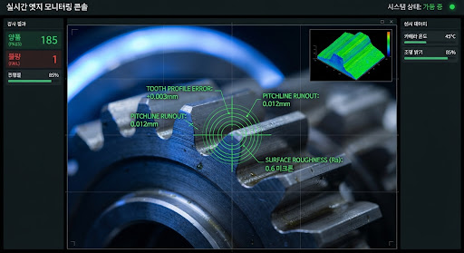
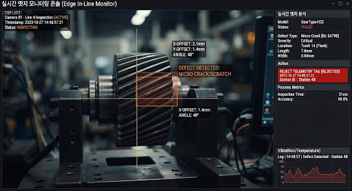
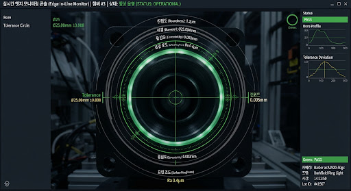
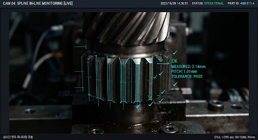
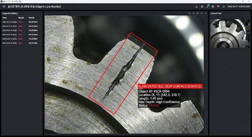
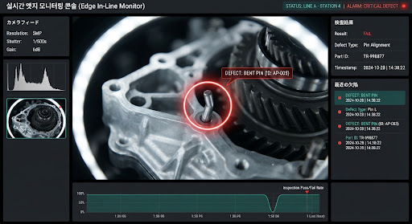
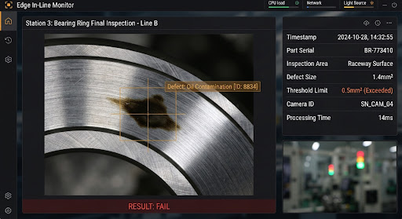

LIVE INLINE
LINE 1~3 ALL RUNNING
금일 총 검사:
284,920 EA
양품:
284,118 (99.72%)
결함 검출:
802 (0.28%)
speed
추론 지연:
28.1ms
+ PLC 3.2ms (합계 31.3ms ≤ 50ms)
hub
HW 매트릭스:
10/10 PC
|
40/40 GigE
(Drop 0)
lock
AIR-GAPPED 100% SECURE
40.0 FPS
CAM 01 // 상단 평면 비전 (TOP VIEW)
PASS 99.8%
26.2ms

FOV: 84.5mm x 62.0mm
EXP: 120μs | GAIN: 3.2dB
GEAR_HUB_PASS [Δ 0.01mm]
TENSORRT_FP16_ENGINE
CONFIDENCE: 0.998
부품 식별 번호: #EVG-884210
TRIGGER: NOMINAL PASS
CAM 02 // 측면 기어 치형 (SIDE PROFILE)
DEFECT DETECTED
29.4ms

DEFECT_CLASS: [Surface Scratch #04]
EJECT SIGNAL ARMED
SCRATCH_04: 98.9% (Len: 1.42mm > 0.20mm)
PLC TRIGGER: CHUTE #2 SOLENOID ON
TOTAL TIME: 32.6ms
eject
PLC Ejector #2 PULSE SENT (42ms 타임스탬프 동기화)
스냅샷 저장됨
CAM 03 // 내경 홀 및 챔퍼 (BORE & INNER KEY)
PASS 99.4%
27.0ms

DIA: Ø 24.004mm (±0.015)
CHAMFER: 45° 0.5mm
BORE_OK (0.994)
PatchCore Anomaly Score: 0.041
NOMINAL
부품 식별 번호: #EVG-884210
TRIGGER: NOMINAL PASS
CAM 04 // 하부 안착면 및 스플라인 (BOTTOM SPLINE)
PASS 99.6%
25.4ms

SPLINE TOOTH COUNT: 24/24
PITCH ERROR: 0.002mm
SPLINE_PROFILE_OK
YOLOv8-Small-RT TensorRT
CONFIDENCE: 0.996
부품 식별 번호: #EVG-884210
TRIGGER: NOMINAL PASS
monitoring
실시간 추론 지연 파형 (Inference Latency Waveform - Past 600 Cycles)
임계 한계선: 50.0ms
현재 피크: 34.8ms
평균 지연: 28.1ms
실시간 불량 배출 로그
LIVE REJECTIONS
최근 15분

CAM 02
SURFACE SCRATCH #04
14:32:08.412
Line 1 · 챔퍼 경계면 스크래치 (길이 1.42mm)
신뢰도: 98.9%
Chute 2 배출

CAM 14
PIN DEFORMATION #02
14:31:45.890
Line 2 · 압입 핀 각도 틀어짐 (편차 0.38mm)
신뢰도: 99.2%
Robot Arm 회수

CAM 31
OIL CONTAMINATION
14:29:12.104
Line 3 · 베어링 안착면 잔류 오일 오염
신뢰도: 96.4%
Air Blower 배출
developer_board
10대 엣지 GPU PC 클러스터 상태
ALL HEALTHY
PC-01
54°C
PC-02
52°C
PC-03
56°C
PC-04
51°C
PC-05
53°C
PC-06
55°C
PC-07
49°C
PC-08
53°C
PC-09
54°C
PC-10
52°C
ACTIVE FOCUS: EDGE-PC-01 (RTX 4000 Ada SFF)
LOAD: 28%
VRAM ALLOCATION
4.2 GB / 16.0 GB
PLC PROTOCOL LINK
Modbus TCP (1.1ms)
DIGITAL I/O TRIGGER
4-Channel High-Speed Opto
RUNTIME KERNEL
Ubuntu Realtime 22.04
불량 판정 임계치 (Threshold)
0.85 (권장)
verified
불량 유출률 (False Neg.)
0.00% / 목표 ≤ 0.01%
미검률 제로 달성 (Zero Escape)
filter_tilt_shift
과검률 (False Pos.)
0.24% / 허용 ≤ 0.50%
정상품 오배출 최소화 제어
timer
판정 파이프라인 지연
31.3ms / 기준 50.0ms
초당 10개 완벽 동기화
savings
연간 예상 절감 (ROI)
약 3.2억 원 / 7개월 회수
육안 검사원 6명 대체 및 폐쇄망 TCO 절감